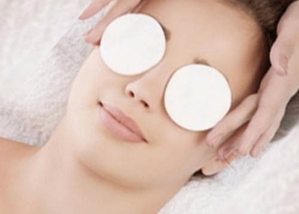
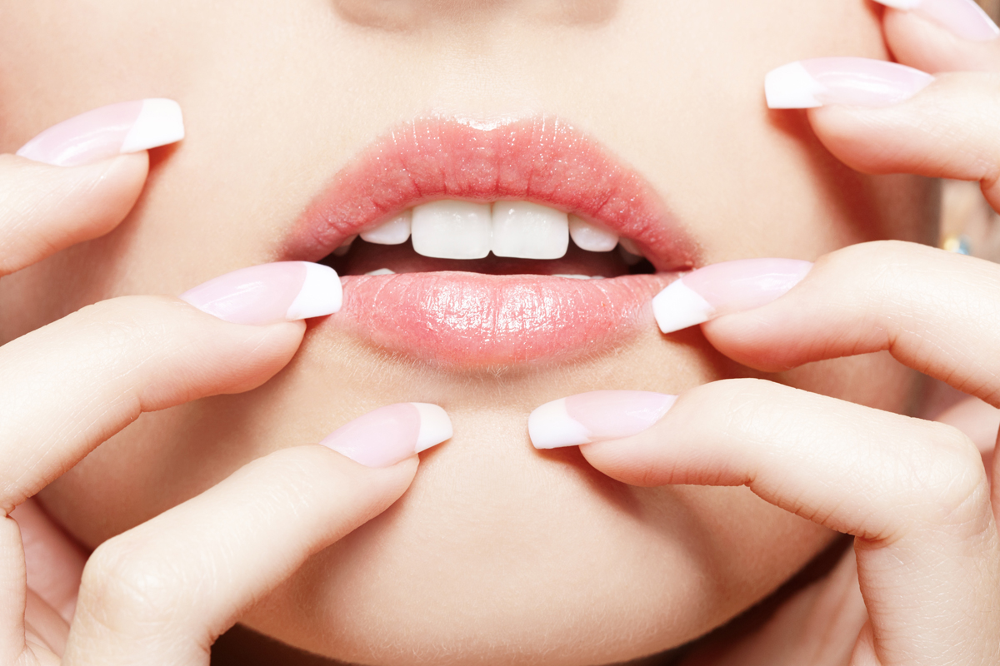
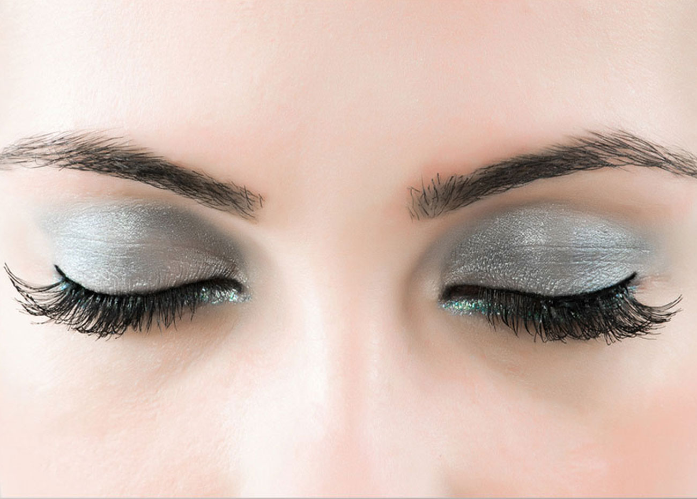

Do not reach the cup of coffee when you wake up as it not only damages your skin but also your guts. Drink a glass of warm water with lemon juice and honey that will help in digestion and cleansing your blood flow. This is the best natural way that if done regularly results in fair and glowing skin in 15 days!
This is a non-negotiable and one of the most important natural beauty tips for glowing skin you will read. The key is to keep it simple and regular:
Step 1: Cleanse-Milk is an effective facial cleanser and makes your skin soft. It contains compounds that can improve skin barrier function.
Step 2: Tone-Aloe vera is brightens your skin and may help fight acne. It’s also moisturizing, so it’s a great toner to use for dry skin. Just mix 1/2 cup rose water
1/2 cup aloe vera,
Mix together thoroughly, then apply to your clean.
Step 3: Moisturize
Take a look at your breakfast routine! Skipping meals, especially breakfast causes wrinkling and dull skin.A wholesome healthy breakfast consisting of oatmeals, freshly cut fruits, grains and dried fruits are necessary to sustain your body till lunchtime with required nutrients. Popping in antioxidant rich food in between meals like dry fruits is surely one of the most underrated natural remedies for glowing skin!
Scrubbing is time consuming both in terms of preparing the scrub and applying it. So what to do for glowing skin when you do not have time? Oatmeals are here for rescue as it is the easiest and effective scrub you can make in minutes! Simply take 2 tbsp of oatmeal, 1 tbsp of honey and grind them together. Add 1 tbsp of water to make it pasty. Mix 1 tbsp of honey again and apply to your face. One of the best natural remedies for glowing skin and removing dead cells!
Your lunches and dinners need to be less fatty or fried. Also, decrease milk based product consumption as too much of it can play with your hormone levels leading to acne and oily skin! Avoiding spicy and fermented food is a big bonus as they are difficult to digest. More fruits, rice and greens are great home remedies for glowing skin.
1 Make a mixture of mehndi and oil and apply it on the face.2. Make a paste of 1/2 teaspoon lemon juice and glycerin and apply it on the spots.3. Make a mixture of turmeric and curry leaves and apply on the face and wash it after 15 minutes.4. Grind dried basil leaf, neem and mint (100 gm each). Add some turmeric powder and rose water to make it a paste and apply it on the spots.5. Grind betel leaf and add a little coconut oil and apply it on the spots.6.Soak a chapatti in milk overnight. Make it into a paste, apply it on black head. and continue it for several days.7. Make a paste of saffron and add some honey now apply it on the face to remove your black spots.8. For removing black spots, apply a paste of turmeric and basil. 9. To remove wrinkles on the face, apply a mixture of sandalwood powder, rosewater and glycerin. After some time Wash it with cold water.
You can mix one-tablespoon cranberry sauce juice with two tablespoons Vaseline for a delicious homemade lip balm.* Apply the juice of lemon skin for avoiding black color of lips.* Massage your lips with coriander leaf juice for soft and rosy lips.
When using a pencil you must apply in small, feathered strokes. When starting at the interior corner work outwards.
To bring back the shine and thickness of the hair, use aloe vera products. It can treat dry or damaged hair effectively and it is recommended for any kind of hair problems. Even curd can be used as a conditioner to your hair to make it look soft and silky. You can also apply aloe vera gel as a hair mask and leave it undisturbed for 30 minutes, then rinse for a perfect bouncy hair. If you do it regularly, you will see the productive effect of natural treatment.